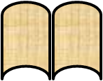

Xiatian Zhu
School of Electronic Engineering and Computer Science,
Queen Mary University of London,
London E1 4NS,
United Kingdom.
Email: xiatian.zhu AT qmul.ac.uk
Xiatian Zhu is PhD student (the final year) in the Computer Vision Group of Queen Mary University of London (QMUL), under the supervision of Prof. Shaogang Gong and Dr. Tao Xiang. Prior to joining QMUL, he received the B.Eng and M.Eng. degree both in Computer Science from University of Electronic Science and Technology of China. His research interests include computer vision and pattern recognition, particularly in visual surveillance, multi-source structure discovery, random forests.
His CV is [here].Publication

 T. Wang, S. Gong, X. Zhu and S. Wang. Person Re-Identification by Video Ranking. In Proc. European Conference on Computer Vision, Zurich, Switzerland, September 2014. (ECCV) [PDF] [Project page / Dataset / CMC]
Abstract: Current person re-identification (re-id) methods typically rely on single-frame imagery features, and ignore space-time information from image sequences. Single-frame (single-shot) visual appearance matching is inherently limited for person re-id in public spaces due to visual ambiguity arising from non-overlapping camera views where viewpoint and lighting changes can cause significant appearance variation. In this work, we present a novel model to automatically select the most discriminative video fragments from noisy image sequences of people where more reliable space-time features can be extracted, whilst simultaneously to learn a video ranking function for person re-id. Also, we introduce a new image sequence re-id dataset (iLIDS-VID) based on the i-LIDS MCT benchmark data. Using the iLIDS-VID and PRID 2011 sequence re-id datasets, we extensively conducted comparative evaluations to demonstrate the advantages of the proposed model over contemporary gait recognition, holistic image sequence matching and state-of-the-art single-shot/ multi-shot based re-id methods.
X. Zhu, C.C. Loy and S. Gong. Constructing Robust Affinity Graphs for Spectral Clustering. In Proc. IEEE Conference on Computer Vision and Pattern Recognition, Columbus, Ohio, USA, June 2014. (CVPR) [PDF] [Poster] [Project page / Codes]
Abstract: Spectral clustering requires robust and meaningful affinity graphs as input in order to form clusters with desired structures that can well support human intuition. To construct such affinity graphs is non-trivial due to the ambiguity and uncertainty inherent in the raw data. In contrast to most existing clustering methods that typically employ all available features to construct affinity matrices with the Euclidean distance, which is often not an accurate representation of the underlying data structures, we propose a novel unsupervised approach to generating more robust affinity graphs via identifying and exploiting discriminative features for improving spectral clustering. Specifically, our model is capable of capturing and combining subtle similarity information distributed over discriminative feature subspaces for more accurately revealing the latent data distribution and thereby leading to improved data clustering, especially with heterogeneous data sources. We demonstrate the efficacy of the proposed approach on challenging image and video datasets.
X. Zhu, C.C. Loy and S. Gong.
Learning from Multiple Sources for Video Summarisation.
International Journal of Computer Vision, in print, 2015. (IJCV)
[Preprint]
[Project page]
X. Zhu, C.C. Loy and S. Gong.
Video Synopsis by Heterogeneous Multi-Source Correlation.
In Proc. IEEE International Conference on Computer Vision,
Sydney, Australia, December 2013. (ICCV)
[PDF]
[Poster]
[Project page]
Abstract: Generating coherent synopsis for surveillance video stream remains a formidable challenge due to the ambiguity and uncertainty inherent to visual observations. In contrast to existing video synopsis approaches that rely on visual cues alone, we propose a novel multi-source synopsis framework capable of correlating visual data and independent non-visual auxiliary information to better describe and summarise subtle physical events in complex scenes. Specifically, our unsupervised framework is capable of seamlessly uncovering latent correlations among heterogeneous types of data sources, despite the non-trivial heteroscedasticity and dimensionality discrepancy problems. Additionally, the proposed model is robust to partial or missing non-visual information. We demonstrate the effectiveness of our framework on two crowded public surveillance datasets.
X. Zhu, C.C. Loy and S. Gong.
Constrained Clustering with Imperfect Oracles.
IEEE Transactions on Neural Networks and Learning Systems, 2015 (TNNLS)
[DOI]
[PDF]
[Project page]
X. Zhu, C.C. Loy and S. Gong.
Constrained Clustering: Effective Constraint Propagation with Imperfect Oracles.
In Proc. IEEE International Conference on Data Mining,
Dallas, Texas, USA, December 2013. (ICDM)
[PDF]
[Project page]
Abstract: While spectral clustering is usually an unsupervised operation, there are circumstances in which we have prior belief that pairs of samples should (or should not) be assigned with the same cluster. Constrained spectral clustering aims to exploit this prior belief as constraint (or weak supervision) to influence the cluster formation so as to obtain a structure more closely resembling human perception. Two important issues remain open: (1) how to propagate sparse constraints effectively, (2) how to handle ill-conditioned/noisy constraints generated by imperfect oracles. In this paper we present a unified framework to address the above issues. Specifically, in contrast to existing constrained spectral clustering approaches that blindly rely on all features for constructing the spectral, our approach searches for neighbours driven by discriminative feature selection for more effective constraint diffusion. Crucially, we formulate a novel data-driven filtering approach to handle the noisy constraint problem, which has been unrealistically ignored in constrained spectral clustering literature.
X. Zhu, S. Gong and C.C. Loy. Comparing Visual Feature Coding for Learning Disjoint Camera Dependencies. In Proc. British Machine Vision Conference, Guildford, UK, September 2012. (BMVC) [PDF] [ Extended abstract ] [Poster] [Code]
Abstract: This paper systematically investigates the effectiveness of different visual feature coding schemes for facilitating the learning of time-delayed dependencies among disjoint multi-camera views. Accurate inter-camera dependency estimation across nonoverlapping camera views is non-trivial especially in crowded scenes where inter-object occlusion can be severe and frequent, and when the degree of crowdedness can change drastically over time. In contrast to existing methods that learn dependencies between disjoint cameras by solely relying on correlating universal object-independent low-level visual features or transition time statistics, we propose to use either supervised or unsupervised feature coding, to establish a robust and reliable representation for estimating more accurately inter-camera activity pattern dependencies. We show comparative experiments to demonstrate the superiority of robust feature coding for learning inter-camera dependencies using benchmark multi-camera datasets of crowded public scenes.
Awards
- ECCV Student Travel Grant, 2014
- ICCV Student Travel Grant (sponsored by PAMI-TC), 2013
- BMVA International Conference Travel Bursary, 2013
- QMUL Postgraduate Research Fund, 2013